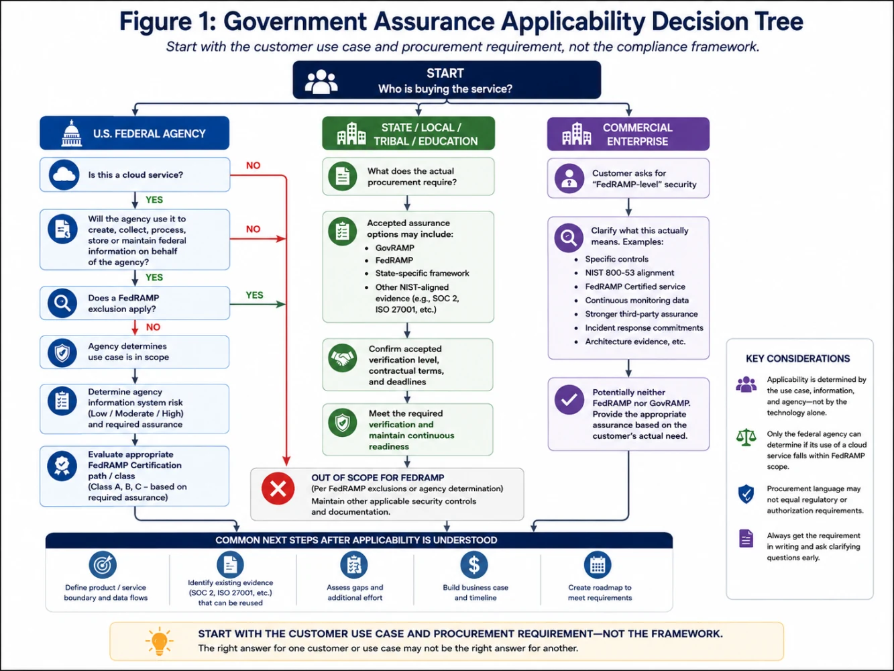
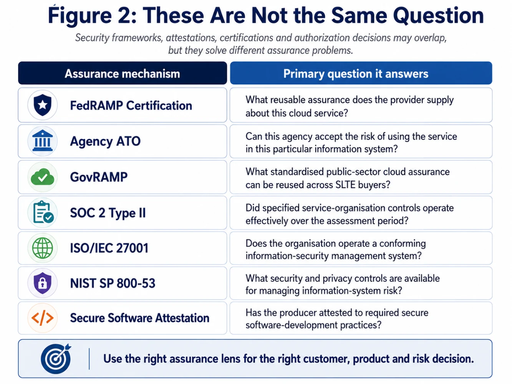
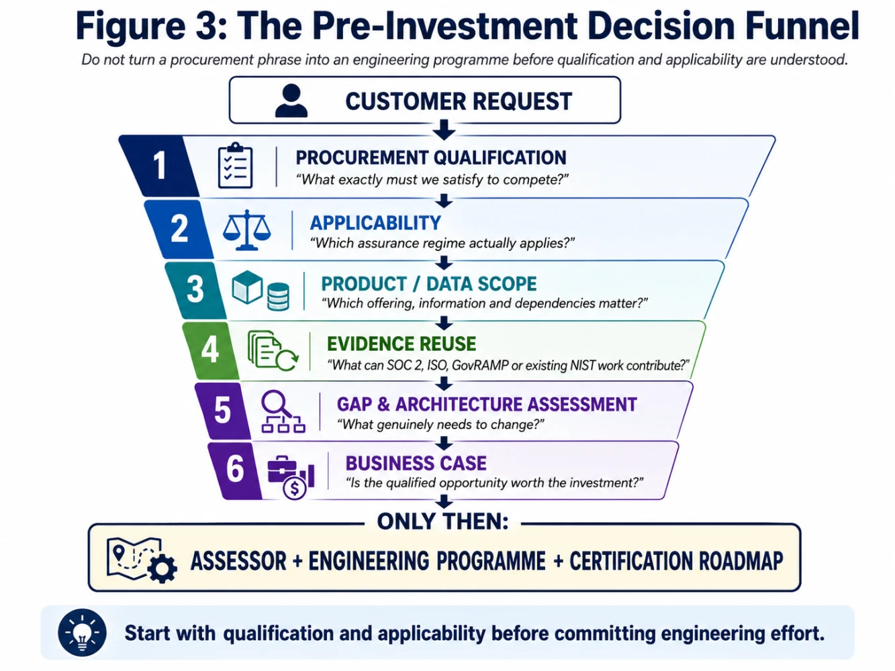

The most expensive government-compliance mistake may happen before the assessment begins
A single sentence in an RFP can change the temperature of a room.
In this case, the message was effectively:
We could not bid without committing to FedRAMP.
Around the same period, another public-sector conversation was asking about government-grade assurance, but the language was less precise: “FedRAMP compliance or equivalent verification.”
No certification class.
No clear statement of what “equivalent” meant.
No simple answer to what part of the product was expected to be covered.
Then came the perfectly reasonable question from Sales:
“We already have SOC 2 Type II and ISO/IEC 27001. Isn’t that enough?”
And from another education-sector conversation:
“What about GovRAMP?”
Those questions look like compliance questions.
I think they are actually market qualification, product architecture and risk-decision questions.
And this is where I believe many government-assurance programmes can go wrong before the first assessor has even been engaged.
The requirement is real. The interpretation may not be.
If an RFP says that a FedRAMP commitment is necessary to bid, the commercial consequence is very real.
You cannot respond to a procurement gate by telling Sales:
“Technically, the wording could have been better.”
But that does not mean Security should immediately launch a FedRAMP programme.
There are actually three different questions hiding inside that one RFP sentence:
1. Procurement eligibility
What must we promise or already possess to remain eligible for the opportunity?
2. Programme applicability
Does the proposed customer use of our cloud service actually fall within FedRAMP’s scope?
3. Assurance evidence
Which existing certifications, assessments and security capabilities can be reused—and what additional work remains?
Those three questions are related.
They are not interchangeable.
That distinction has become one of the most useful lessons for me from examining government-assurance requirements.
Question One: What is the procurement team really asking for?
Imagine the RFP says:
“FedRAMP compliance or equivalent required.”
Before anybody opens NIST SP 800-53, I would want Sales and Security to clarify:
· Is FedRAMP mandatory to submit the bid, or required before production use?
· Does the customer expect an existing FedRAMP Certification?
· Is a formal commitment or roadmap sufficient?
· Does the customer recognise an “In Process” or other Marketplace status?
· What does the buyer mean by “equivalent”?
· Would GovRAMP be recognised?
· Would SOC 2 Type II be accepted for the procurement stage?
· Does ISO/IEC 27001 have evidentiary value?
· Which exact product or SKU is being purchased?
· What information will the customer put into it?
· What deadline applies?
This sounds administrative.
It isn’t.
A statement such as:
“FedRAMP required.”
could imply very different levels of investment depending on the answer.
Question Two: Does FedRAMP actually apply?
This is where an important misconception appears.
Not every product sold to a federal agency automatically requires FedRAMP.
The current FedRAMP scope covers cloud computing products and services—including SaaS, PaaS and IaaS—that create, collect, process, store or maintain federal information on behalf of a federal agency, unless an identified exclusion applies. [1]
And the 2026 guidance makes another point that product companies should pay close attention to:
The specific agency use case determines scope—not simply the existence of the cloud product.
FedRAMP states that only the federal agency can ultimately determine whether its use of a cloud service falls within FedRAMP scope. The same service could potentially be in scope for one agency use case and outside scope for another. [1]
That immediately changes the conversation.
“Public-facing” is not the scope test
When government opportunities first arise, a conservative internal instinct can be:
“Let’s treat every public-facing, customer-purchased, revenue-generating application as potentially in scope.”
That may be a useful portfolio triage mechanism.
But it is not the FedRAMP test.
Revenue does not determine FedRAMP scope.
Internet exposure does not determine FedRAMP scope.
Even the fact that a federal agency uses the service does not, by itself, answer the question.
The questions are closer to:
What is the agency doing with the service?
What federal information is involved?
What responsibility does the provider assume?
What shared-responsibility model exists?
Does one of the defined exclusions apply?
FedRAMP’s 2026 scope guidance even provides examples where similar kinds of services can move in or out of scope depending upon how the agency uses them. [1]
That is why applicability must precede implementation.
And then there is GovRAMP
This becomes especially relevant for EdTech companies.
A federal research agency and a state Department of Education may both be “government customers.”
They do not automatically present the same assurance problem.
GovRAMP was developed specifically around the needs of state, local, tribal and education—SLTE—government organisations and provides a standardised public-sector approach to cloud security evaluation based on NIST-oriented security practices. [2]
That does not mean:
Federal = FedRAMP
and
State = GovRAMP
in every procurement situation.
Customers can establish their own procurement requirements.
A state buyer may reference FedRAMP.
A school system may require a different framework.
A procurement may permit equivalent evidence.
A provider with existing federal assurance may be able to reuse some of that investment through GovRAMP mechanisms such as Fast Track. [2]
The CISO’s job is therefore not to select a framework based on the word government.
The job is to understand the buyer, use case, contract and information.
This gave me a second decision model
In Article 1, I described the Government-Ready Product Security Flywheel.
Article 2 begins with the second stage:
Applicability.
I now think about it through the following decision tree

The distinction between “FedRAMP” and an agency ATO matters
There is another terminology change worth knowing in 2026.
FedRAMP is now using FedRAMP Certification to distinguish the reusable FedRAMP assessment of the cloud service from an individual agency’s Authorization to Operate (ATO). [3]
A FedRAMP Certification does not make the risk decision on behalf of every agency.
Federal agencies must still authorize the information systems through which they use FedRAMP Certified cloud offerings. [4]
Think of it this way:
FedRAMP gives the agency reusable assurance about the cloud service.
The agency still decides whether using that service, in that configuration, for that mission and information, is acceptable.
That distinction becomes particularly important when Sales hears:
“They want an ATO.”
The right follow-up is:
Whose ATO, for which system, using what FedRAMP Certified service?
So are SOC 2 and ISO 27001 “enough”?
This question came up naturally.
And the answer is more nuanced in 2026 than:
“No. FedRAMP is different.”
That answer is technically safe but strategically incomplete.
SOC 2 Type II
SOC 2 examines a service organisation’s controls relevant to Trust Services Criteria such as security, availability, processing integrity, confidentiality and privacy. A Type II engagement assesses operation over a defined period; it is not simply a point-in-time certificate. [5]
And here is the interesting 2026 development:
For FedRAMP 20x Class A, the current rules explicitly recognise SOC 2 Type II, GovRAMP and certain existing FedRAMP processes as approved alternative security frameworks that can serve as an entry condition, provided the applicable requirements are met and the assessment is sufficiently current. [6]
That is important.
It means existing assurance maturity may now have formal reuse value.
But it does not mean:
SOC 2 Type II = FedRAMP.
A provider pursuing Class A still has FedRAMP-specific requirements to satisfy.
And higher classes have different independent-assessment and assurance obligations. [6]
ISO/IEC 27001
ISO/IEC 27001 establishes requirements for an Information Security Management System—an ISMS—and demonstrates that an organisation has implemented a systematic approach to managing information-security risk. [7]
That is valuable.
It can demonstrate organisational maturity.
It can give Security a substantial starting point for policies, governance, risk treatment, access control, supplier management, incident processes and other security practices.
Mappings can also help teams understand overlap between ISO controls and NIST security controls.
But under the current FedRAMP 2026 Class A rules, ISO/IEC 27001 is not listed as one of the approved alternative security frameworks in the same way that SOC 2 Type II and GovRAMP are. [6]
So the answer to Sales should not be:
“ISO doesn’t matter.”
Nor should it be:
“ISO means we’re FedRAMP ready.”
A better answer is:
“Our ISO/IEC 27001 programme demonstrates useful security maturity and may reduce the amount of foundational work we need to create from scratch, but we still need to establish exactly which FedRAMP requirements and evidence remain.”
That is both commercially useful and technically defensible.
And NIST SP 800-53 is not a certification either
This is another distinction worth making.
NIST SP 800-53 is a catalogue of security and privacy controls for information systems and organisations. [8]
It is enormously important to federal risk management.
But saying:
“We are aligned with NIST 800-53”
is not the same thing as:
“We have a FedRAMP Certification.”
A framework can define what good controls look like.
A certification or authorization process answers a different question:
What has actually been implemented, assessed, evidenced and accepted for this particular context?
Secure-software attestation answers yet another question
CISA’s Secure Software Development Attestation Form allows software producers supplying software to the federal government to attest to specified secure software-development practices. [9]
That matters enormously to product security.
But it is not a replacement for cloud-service assurance.
One is largely asking:
How was the software produced?
FedRAMP is asking a much broader question:
How does this cloud service protect federal information and continuously demonstrate the required assurance?
Related?
Absolutely.
Equivalent?
No.

The cloud-provider inheritance question
Then comes the architecture conversation.
If AWS, Azure or another infrastructure provider already has the required FedRAMP status, does that solve the problem?
It helps enormously.
But inheritance is not magic.
FedRAMP certification packages explicitly distinguish:
· provider responsibilities,
· inherited controls,
· customer responsibilities,
· information flows,
· third-party resources,
· configuration expectations,
· and integrations. [10]
The exact responsibility depends on the service model and architecture.
For a SaaS company, using a FedRAMP Certified infrastructure provider may allow substantial infrastructure capabilities to be inherited.
But the SaaS provider may still need to explain and evidence areas such as:
identity,
application security,
tenant isolation,
data flows,
configuration,
software development,
vulnerability management,
logging,
incident handling,
third-party services,
and secure operation of the application.
So rather than asking:
“Is AWS FedRAMP?”
the architecture question should become:
“Exactly which security capabilities do we inherit, which do we configure, which do we implement ourselves, and which remain shared?”
That is the question that belongs on the architecture diagram.
AI makes the boundary question harder
Now add an LLM.
Imagine our fictional EdTech provider, LearnSphere, introduces an AI capability.
The main application may be inside the intended government boundary.
But the prompt is sent to an external model API.
Perhaps telemetry is sent to another platform.
Maybe moderation is provided by a third service.
Maybe support logs include model interactions.
At that point, saying:
“The AI feature is only an integration.”
doesn’t answer the risk question.
FedRAMP packages are expected to explain information flows, third-party information resources, inherited responsibilities and the service boundary. [10]
So the CISO and architect need to ask:
Does the third party handle relevant information?
Can it materially affect the confidentiality, integrity or availability of the service?
What information crosses the boundary?
What assurance exists for that dependency?
Can the feature be disabled for a government tenant?
The AI discussion therefore becomes another boundary discussion.
Now apply the model to LearnSphere
Consider the same fictional EdTech company from Article 1.
It has three new opportunities.
Opportunity A — Federal research agency
The agency wants LearnSphere’s SaaS service for a programme that will place federal information inside the platform.
The procurement says FedRAMP is mandatory.
Likely decision path
FedRAMP applicability must be evaluated with the agency.
If the agency determines that the use case falls within FedRAMP scope, the organisation must evaluate the appropriate FedRAMP Certification route and assurance level.
At that point, the fact that LearnSphere already has SOC 2 or ISO 27001 matters as readiness and potentially reusable evidence.
It does not eliminate the FedRAMP decision.
Opportunity B — State Department of Education
The customer wants the same platform.
The security questionnaire references both GovRAMP and federal security expectations.
Decision path
This is not automatically a federal FedRAMP applicability question.
It is first a procurement-requirements question.
What does this state recognise?
Is GovRAMP required?
Will it accept a FedRAMP status?
Is another verification sufficient?
Does the customer impose additional education/privacy requirements?
GovRAMP is designed around this state/local/tribal/education market, but the actual contract remains the source of truth for the opportunity. [2]
Opportunity C — Fortune 500 enterprise
The customer’s vendor-security team says:
“We expect FedRAMP-level security.”
They are not a government entity.
There is no federal use case.
Decision path
Potentially:
Neither FedRAMP nor GovRAMP.
Instead, Security should ask what “FedRAMP-level” actually means.
Do they require:
· NIST 800-53 alignment?
· stronger vulnerability SLAs?
· specific encryption?
· software-supply-chain controls?
· incident-notification commitments?
· architecture evidence?
· continuous-monitoring data?
· an actual FedRAMP Certified offering?
Do not spend millions solving an undefined adjective.
This leads to one of my strongest conclusions
Customer language is not automatically a compliance determination.
When a customer says:
“FedRAMP.”
the security organisation should not immediately answer:
“Yes” or “No.”
It should answer with better questions.
Seven questions Sales should capture before escalating to Security
I would create a standard intake:
1. Who is the contracting entity?
Federal agency?
State?
School district?
University?
Prime contractor?
Commercial business?
2. What exactly does the procurement document say?
Copy the requirement verbatim.
Do not translate it into:
“Customer needs FedRAMP.”
3. Is it a bid gate, contract condition or production requirement?
Those are materially different.
4. Which product/service/SKU is the customer buying?
Do not scope the whole company when the buyer is purchasing one offering.
5. What information will the service process?
This is central to applicability and security categorisation.
6. What assurance evidence is accepted?
FedRAMP Certification?
GovRAMP?
SOC 2?
ISO?
“Equivalent”?
If equivalent—equivalent to what?
7. When does the requirement have to be satisfied?
At proposal?
At award?
Before production?
Within 12 months?
This intake can prevent weeks of unnecessary security and engineering activity.
What Security should determine before asking Engineering to change anything
Before anyone says:
“We need a new cloud environment.”
Security should produce a short Applicability Decision Record containing:
Customer
Who is buying?
Use case
What will they actually do with the product?
Information
What information enters, leaves and persists?
Procurement requirement
Exact contractual/RFP language.
Regulatory/programme applicability
FedRAMP, GovRAMP, buyer-specific—or neither.
Existing assurance
SOC 2, ISO, NIST mappings, secure-development evidence, current assessments.
Proposed product boundary
Applications, shared platforms, identity, CI/CD, telemetry, third parties, AI and support systems.
Assurance gap
What cannot currently be demonstrated?
Commercial decision
Bid / clarify / conditionally proceed / do not pursue.
Only after that should Engineering receive a significant architecture request.

One more 2026 trap: Class A, B and C do not mean Low, Moderate and High
This is important enough to call out separately.
FedRAMP’s new Certification Classes describe the level of assurance information the provider commits to supplying.
They are not direct replacements for FIPS Low, Moderate and High impact categorisation. [11]
FedRAMP itself explicitly warns agencies against treating them as one-for-one equivalents.
The agency information system still has to be categorised based on potential impact to confidentiality, integrity and availability.
The provider’s Certification Class answers a different question:
How much assurance information is the provider willing and required to make available?
That is a subtle distinction.
But for executives planning a FedRAMP investment, it can materially change the operating commitment.
And 20x changes the path conversation
Under the current 2026 model, FedRAMP 20x Classes A, B and C use the Program Certification path rather than requiring the traditional agency-sponsorship model. [12]
Class D is expected later.
Rev5 remains temporarily available through specific legacy paths, but FedRAMP plans to stop accepting new Rev5 certification applications on June 11, 2027. [12]
As of August 2026:
· Class A submissions have opened.
· Class B and Class C pipelines are scheduled to open on August 31, 2026. [13]
This matters because an executive discussion based on:
“First we need an agency sponsor.”
may already be based on an older operating assumption.
The programme is moving.
Your strategy needs to use the programme that exists now, not the FedRAMP people remember from three years ago.
What does this mean for each leadership group?
CEO / Business Leader
Ask:
Is this requirement attached to sufficient qualified revenue to justify the investment?
Do not fund government readiness based only on theoretical TAM.
CRO / Sales
Ask:
What exactly is preventing us from bidding or winning?
Bring the actual RFP language to Security.
Not a paraphrase.
CTO / Architecture
Ask:
What architecture change is required by the risk—and what change are we merely assuming is required by the framework?
Do not build a government fork before applicability and boundary analysis.
CISO
Ask:
Which assurance question are we trying to answer: regulatory applicability, contractual qualification, product security—or all three?
Security should become the translator between them.
GRC
Ask:
Which existing evidence is reusable, and where does a genuine assurance gap remain?
Do not throw away SOC 2 and ISO work.
Do not oversell it either.
Product
Ask:
Is government readiness a feature of this product, a separate SKU, or a new product operating model?
That decision affects roadmap, pricing and support long after certification.
Engineering / Platform
Ask:
Please show us the verified boundary and gap before asking us to redesign the platform.
That may be the most important sentence in the article.
My five-question executive go/no-go test
Before approving a government-assurance programme, I would want five questions answered.
1. Is the opportunity real?
Named customer, procurement stage, potential contract value.
2. Is the requirement clear?
Actual language, expected status, deadline and accepted alternatives.
3. Is applicability understood?
Buyer, cloud use case, information, programme and boundary.
4. Do we understand our starting point?
Existing certifications, evidence, architecture and operational maturity.
5. Can we sustain the outcome?
Not simply achieve certification.
Operate it.
Maintain evidence.
Manage changes.
Support customers.
Respond to incidents.
Pay for it year after year.
If leadership cannot answer those five questions, I would hesitate before turning the requirement into an engineering programme.
What that RFP taught me
When I first saw:
“FedRAMP required.”
the natural question was:
“What do we need to implement?”
I now believe there are several questions that should come first:
What exactly is the customer requiring?
Which programme actually applies?
What is the customer trying to protect?
Which evidence do we already possess?
And what business opportunity justifies closing the remaining gap?
That changes the role of Security.
Security is no longer the organisation that receives an RFP, searches for a framework and produces a compliance backlog.
It becomes the function that helps the company decide:
what it is committing to,
why,
for which customer,
for which product,
at what cost,
and ultimately—
whether that commitment creates enough trust and market value to be worth sustaining.
That, to me, is what a Field CISO should bring to the government-market conversation.
Not:
“Here are the controls.”
But:
“Here is the decision we are actually making.”
Next in the series
The FedRAMP Enclave Myth
Can a lean SaaS or EdTech company isolate its government customers—or do identity, CI/CD, AI, support, logging and third-party dependencies follow the product into the boundary?
References
[1] FedRAMP — Scope of FedRAMP, Consolidated Rules for 2026. https://www.fedramp.gov/2026/scope/
[2] GovRAMP — GovRAMP for Service Providers. https://govramp.org/service-providers
[3] FedRAMP — What’s Changing in 2026. https://www.fedramp.gov/2026/providers/updating/changes/
[4] FedRAMP — Agency Use of FedRAMP Certified Cloud Services. https://www.fedramp.gov/2026/reference/agency-use/
[5] AICPA & CIMA — System and Organization Controls / SOC 2. https://www.aicpa-cima.com/resources/landing/system-and-organization-controls-soc-suite-of-services
[6] FedRAMP — FedRAMP Certification Rules, including Class A Approved Alternative Security Frameworks. https://www.fedramp.gov/2026/reference/fedramp-certification/
[7] ISO — ISO/IEC 27001:2022, Information Security Management Systems. https://www.iso.org/standard/27001
[8] NIST — SP 800-53 Rev. 5, Security and Privacy Controls for Information Systems and Organizations. https://csrc.nist.gov/pubs/sp/800/53/r5/upd1/final
[9] CISA — Secure Software Development Attestation Form. https://www.cisa.gov/secure-software-attestation-form
[10] FedRAMP — Using FedRAMP Rev5 Certification Packages. https://www.fedramp.gov/2026/agencies/use/packages/rev5/
[11] FedRAMP — FedRAMP Certification Classes. https://www.fedramp.gov/2026/agencies/use/classes/
[12] FedRAMP — Choosing a Certification Path. https://www.fedramp.gov/2026/providers/start/path/
[13] FedRAMP — “Propelling Change: FedRAMP Launches Consolidated Rules for 2026,” June 25, 2026. https://www.fedramp.gov/2026-06-25-propelling-change-fedramp-launches-consolidated-rules-for-2026/
References verified August 13, 2026. FedRAMP is actively transitioning to the Consolidated Rules for 2026; organisations making certification or procurement decisions should verify current rules and effective dates directly with FedRAMP and the relevant government customer.
Views are personal. This article is intended for education and strategic discussion and does not constitute legal, procurement or certification advice.